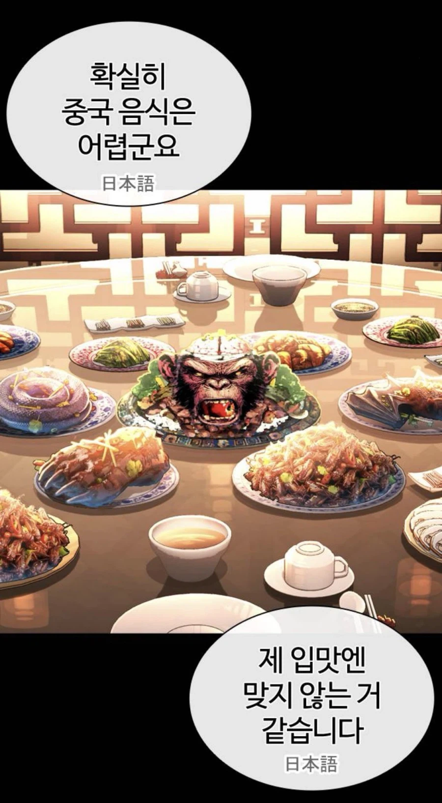

태준아 누가 야쿠자 대접할때 원숭이골이랑 통뱀구이 곰발 박쥐통구이를 던져주니...뭐 기강잡기용이니?

태준아 누가 야쿠자 대접할때 원숭이골이랑 통뱀구이 곰발 박쥐통구이를 던져주니...뭐 기강잡기용이니?
일본어 한자로 쓴거 개웃기네ㅋㅋ
중국 현지인 데려다 놔도 먹을사람 10프로일듯ㅋㅋ
십프로? ㅋㅋㅋㅋㅋㅋ
야마자키 저거 과자 이름아닌가?
山﨑
아니 원숭이골도 아니고 침팬지골요리네 ㅋㅋㅋ
쌀숭이임
ai 무시하지마라 ai면 훨씬 자연스럽다 ㄹㅇ
판타지만화 보면서 현실성을 찾지마라
밑에 짤 저건 진짜 사람 뇌 아니여? 씨발
시저 ㅠㅠ